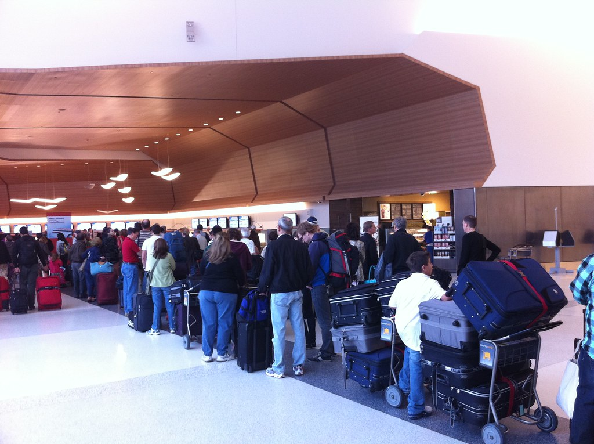
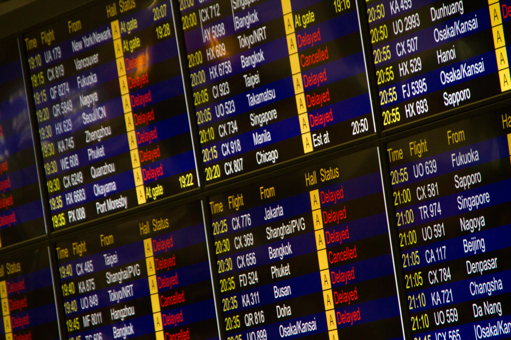

Over 3 million passengers fly in and out of American airports every day as air travel becomes more and more popular for long-distance travel. Flights themselves have become an efficient experience, with faster, fuel-efficient modern aircraft and well-organized on-flight crew. But the experience surrounding the flight — the hours spent waiting at gates, sitting on tarmacs, watching departure boards tick later and later — has steadily gotten worse.
The stress on air traffic infrastructure significantly increased in 2025 as the Federal Aviation Administration saw hundreds of staff cuts as part of a sweeping federal workforce reduction. Airport workers, from TSA agents to air traffic controllers, faced pay freezes and understaffing. Federal plans to cut funding for entire airports emerged in 2026, adding strain to airports across the country as flights were rerouted and redistributed.
These recent challenges have highlighted existing issues in air travel infrastructure, particularly around the timeliness of flights. Delays and even cancellations are common challenges faced by travelers. Looking at data from the Bureau of Transportation Statistics, we can track every flight from January to November 2025. The data reveals that the headaches of air travel are not evenly distributed: flight delays are concentrated to specific airports for reasons that might be unexpected.
The Ground Problem

Importantly, flight delays start before airplanes even take off into the air. They begin on the ground, in the slow crawl between gate and runway on the airport tarmac. Looking at the amount of time planes spend taxiing both to and from airport gates shows that most airports cluster in a predictable middle section, where the tradeoff between inbound and outbound ground time is manageable.
A few airports stand out from the general pattern. Chicago's O'Hare, one of the nation's busiest airports and an airport hub for layovers, is a significant outlier with extreme taxi time both leaving and arriving at gates. The three airports serving the New York City metropolitan area — JFK, LaGuardia, and Newark — all show extreme taxi times leaving the gate, although they perform better in their taxi times arriving at the gate.
What's equally striking is the airports that can handle enormous volume without the corresponding congestion. Atlanta's Hartsfield-Jackson — the world's busiest airport by passenger count for years — has shorter taxi times than all other airports of its size. Interestingly, Chicago's other major airport, Midway, performs significantly better in taxi time not only compared to O'Hare but also to most other major airports.
A long time spent on the tarmac can reflect poor planning on the airport's side. Travelers tend to blame extreme weather; snow and cold temperatures can lead to complications such as icy runways and low visibility. In reality, delays tend to be due to factors within human control.
Blame the Airline, Not the Storm

Across the 20 American airports with the most delayed flights, weather is consistently the least common explanation for delayed flights. Even in cities known for extreme weather, such as Denver, Chicago, and Boston, weather delays do not exceed 50 flights. Instead, carrier issues — meaning the airline's own operations, including crew scheduling, baggage handling, and maintenance — and late aircraft make up the majority of reasons for delays.
A plane that arrives late becomes a plane that departs late, which delays the passengers at the next city, who miss their connections. The effects ripple outward across the country's air travel network.
How a Day Unravels

In fact, the cumulative effect of the compounding delays can be seen at individual airports over the course of the day. When we look at average departure delay by hour of day at the five most delayed airports — Charlotte, Atlanta, Denver, Dallas, and Chicago — a shape emerges that is almost identical across all five cities. Morning flights leave close to on time. The delay climbs through the afternoon and peaks late in the evening. By the end of the day, every delayed aircraft, every crew that ran long, every connection that didn't quite make it has compounded into a system running more than an hour behind itself.
Chicago's O'Hare, in particular, shows an almost comical daily trend: the average delay minutes skyrocket after 6 pm. The average departure delay for late-evening ORD flights reaches 82 minutes, a 9-fold increase from the morning delay of 9 minutes.

For passengers, this means that one strategy to avoid long waits at the airport is to book early departures. Morning flights have yet to experience the effects of a full day of air traffic management issues and tend to leave around their scheduled time, providing an overall smoother traveling experience.
Unlike popular discourse, the challenges of American air travel are less about storms and more about systemic infrastructure. Airports whose designs make ground movement slow and consistently lead to scheduling and management errors create consistently delayed flights that are frustrating for workers and travelers alike. As demand for cheap and fast air travel continues to grow, American airports and airlines will need to act quickly if they want to meet their customers' needs.